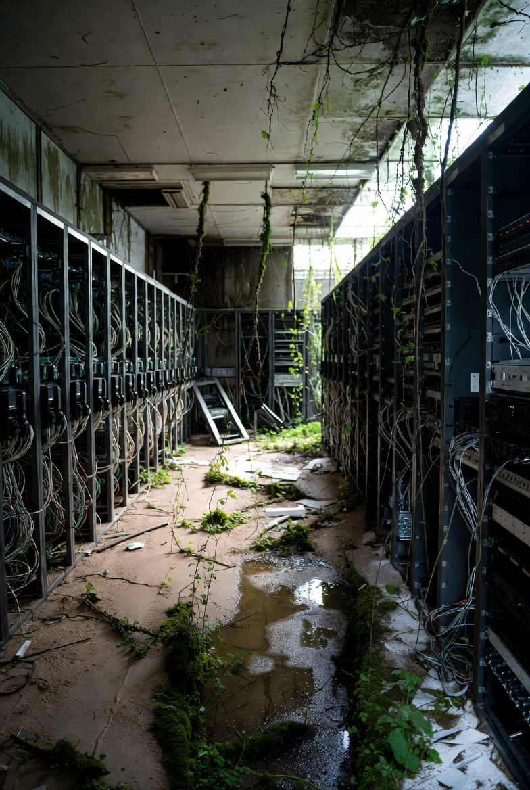
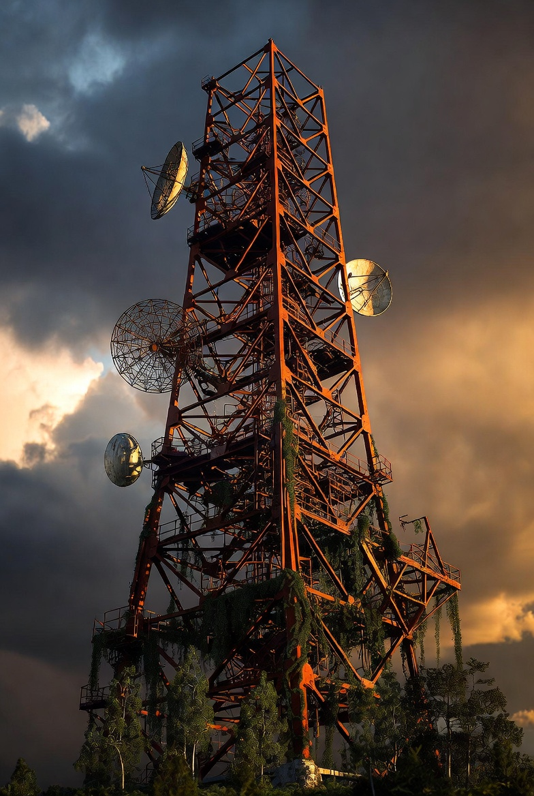

Chapter 03 — Technological Decay
The servers fell silent. Satellites drifted off course. The digital world, which seemed immortal, dissolved as completely as the flesh it once served — leaving only corrupted traces of what was.
All internet infrastructure requires constant maintenance. Without it, collapse is rapid.
Without human maintenance, power stations and distribution networks fail within years.
Data stored on servers that lose power is eventually unrecoverable. History, erased.
Observation 01
The servers outlasted almost everything. In the years after the grid failed, battery backups ran for days, then hours. One by one, the lights went out — the LEDs that had blinked their status for decades going dark in sequence, like candles snuffed in an empty church.
[SYS] connection timeout — retry 1/3
[SYS] connection timeout — retry 2/3
[ERR] SIGNAL_LOST — host unreachable
[ERR] NULL_PROCESS — shutdown imminent
[WRN] cooling_system — OFFLINE
[SYS] last ping: ████████████ ago
_
Observation 02
Communication towers rusted slowly — their steel lattices becoming abstract sculptures, orange and beautiful in the morning light. The dishes that once aimed at satellites sagged on their mounts, pointed at nothing.
Somewhere in low Earth orbit, satellites continue their journeys — silently, blindly — until atmospheric drag finally pulls them home in a streak of fire. The sky fills briefly with the last light of the information age.

Of all the things we built, technology seemed the most immortal. Data, we told ourselves, was forever. The cloud would persist beyond us. But the cloud was always just someone else's computer — and computers need power, cooling, and the constant attention of skilled engineers.
Metro Exodus captures this disillusionment — a world where technology survives only in fragments, cherished and maintained by those who remember how it worked. The rest rusts into art.
The longest-lasting human artefacts will be analogue — stone carvings, ceramic tiles, perhaps some plastics. The digital record of everything we were will be among the first things to disappear.